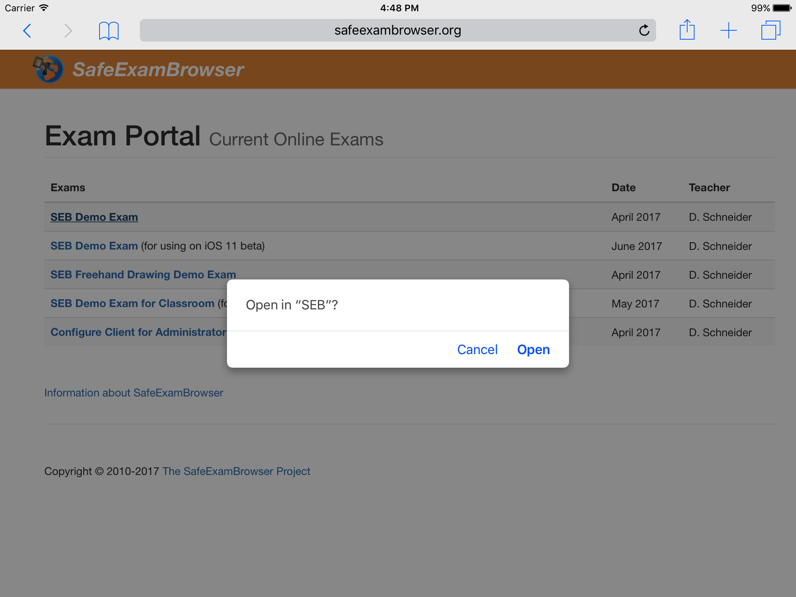
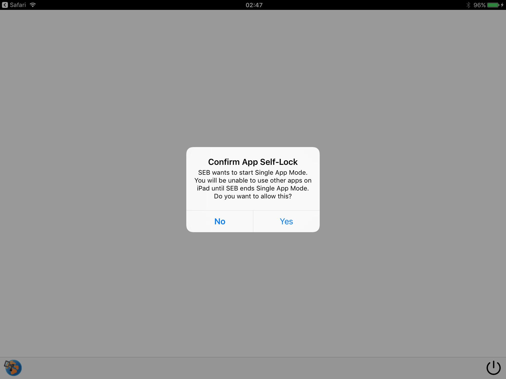

Tutorial SEB for iOS
The following tutorial explains how to configure and use SEB for iOS from the perspective of exam administrators. SEB is a very flexible and modular tool, therefore documentation for examinees on how to use SEB with individual exam setups and the various exam systems it works with should be provided by the institution using SEB or their e-assessment provider.
To understand this tutorial, you should also study the SEB for iOS manual.
Configuring SEB
Being a kiosk browser, SEB doesn't have an address or search field to enter website URLs. As an exam administrator, you have to configure which website is loaded by SEB. This so called Start URL setting can either be the address of your exam system, where students would log in and be presented the exam they are scheduled to conduct. You could also configure SEB to show an exam portal page outside of your exam system, this might be a simple HTML webpage or be managed by a content management system (CMS). On this exam portal page, you would then add a list of links to current exams. This has one advantage: You can use links to SEB configuration files stored on a web server, which then contain the Start URL of your exam. Like this you can use an individual SEB configuration per exam. These links differ from regular http/https web links, you should use the custom URL protocols seb/sebs instead. Tapping such a seb(s):// link opens it in SEB, even if the exam portal page is displayed in another (regular) web browser or you sent an SEB link to your students in an email. Usually the other browser or operating system asks to confirm opening the link in SEB, see the picture below. There the exam portal page was opened in Safari, tapping the SEB Demo Exam link will open SEB.
If opening the seb(s):// link is confirmed, SEB is opened, and loads the SEB config file from the link's target URL sebs://seb.let.ethz.ch/exams/DemoExamGeneral.seb. As a settings password was set for this config file, SEB will request to enter it. When the correct password is entered, SEB decrypts the config file and is reconfigured temporary using the settings contained in the config file.
As the config file has a quit password set, SEB now tries to start a single app mode (also called kiosk mode or lock down mode). In this case the iPad isn't owned and managed (supervised) by an organisation, it belongs to the student. In this case the "App Self-Lock" Single App Mode is invoked, which needs to be confirmed in the dialog displayed in the picture below.
If starting the Single App Mode is confirmed, then the exam is loaded. If App Self-Lock is denied, then SEB displays an error alert with the option to retry starting the Single App Mode or to quit this exam session.
When the Single App Mode is started, students cannot switch to other apps, can't access the notification and control center etc. If they want to quit SEB manually by using the Quit Button in the lower right corner of the screen, in the SEB Dock bar, then SEB asks to enter a quit password. This is defined in these exam settings and usually only exam invigilators/supporters would know this.
This document is work in progress. To be continued soon.
Also see the how to use SEB 2.0 document explaining the concept behind SEB 2.x.